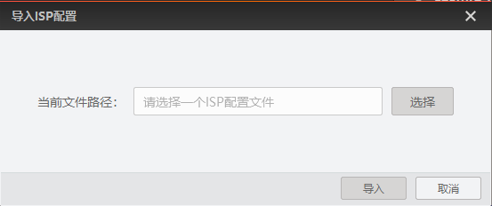

其他功能
设备列表GigE接口部分还可对网卡和网口相机进行相关功能的设置，例如网卡配置属性、相机置顶、重命名用户ID等。
网卡
- 接口信息：选中设备列表的GigE网卡，可在设备/接口信息区域显示该GigE网卡的相关信息，包括型号、物理地址、IP地址、子网掩码、网关。
- 网卡属性设置：设备列表选中网卡后，右键单击网卡属性设置可打开网卡配置工具设置网卡相关参数。具体使用方法请见网卡配置章节的介绍。
网口相机
-
设备信息：选中设备列表的网口相机，可在设备/接口信息区域显示网口相机的相关信息，包括设备名称、物理地址、IP地址、子网掩码、网关、厂商、型号、序列号、设备版本、占用者IP。
-
开始采集：选中设备列表中已连接的相机，右键单击选择开始采集或通过快捷键可对该相机进行图像采集。
-
停止采集：选中设备列表中采图状态的相机，右键单击选择停止采集或通过快捷键可停止该相机的图像采集。
-
重命名用户ID：选中设备列表中已连接或采图状态的相机，右键单击选择重命名用户ID可设置相机的用户ID。
-
相机置顶：选中设备列表的相机，右键单击选择相机置顶可将该相机在当前接口下置顶。
-
取消置顶：选中设备列表已置顶的相机，右键单击选择取消置顶可将该相机在当前接口下取消置顶。
-
GVCP配置：选中设备列表中已连接的相机，右键单击选择GVCP配置，可在弹出的GVCP配置窗口中设置相机的重传次数和超时时间，如下图所示。
图 1 GVCP配置- 重传次数
-
当PC发送的命令包网口相机未及时响应时，通过设置该参数可进行重传。设置的数值即支持重传的最大次数。范围为0 ~ 100，默认为3。
- 超时时间
-
该参数可设置PC发送命令包时，网口相机的最长响应时间。范围为0 ~ 10000 ms，默认为500 ms。
说明-
GVCP配置功能仅在网口相机连接期间有效。
-
采集卡下的网口相机不支持GVCP配置功能。
-
GVSP配置：选中设备列表中已连接的相机，右键单击选择GVSP配置，可在弹出的GVSP配置窗口中设置相机的超时时间，如下图所示。
图 2 GVSP配置- 超时时间
-
该参数可设置取流时，每帧中数据包之间的最大时间间隔。范围为10 ~ 10000 ms，默认为300 ms。在网络环境较差时，设置较短的超时时间，可以保证画面连续性，但画面质量有所下降；若设置较长的超时时间，则可相对保证画面质量，但画面连续性有所下降。
说明-
GVSP配置功能仅在网口相机连接期间有效。
-
采集卡下的网口相机不支持GVSP配置功能。
-
保存GenICam XML：选中设备列表中已连接的相机，右键单击选择保存GenICam XML可加当前连接相机的GenICam文件以XML格式保存到本地PC。
说明GenICam XML是相机根据GenICam协议编写的xml文件，是相机传输给PC的相关信息，包含相机属性节点信息，供用户二次开发参考。
-
导入ISP配置：支持导入图像调试工具保存的ISP配置文件，并根据配置文件对客户端采集的图像进行处理，操作步骤如下：
-
选中设备列表中已连接的相机，右键单击选择导入ISP配置。
-
在弹出的导入ISP配置窗口中选择需要导入的xml文件。
图 3 导入ISP配置说明xml文件需通过图像调试工具生成，详情请参见图像调试工具用户手册。
-
导入成功后，使能下的开启ISP处理。
-
开始采集图像，图像预览窗口显示根据配置文件进行处理后的采集图像。
此时，已启用的ISP模块下显示当前启用的ISP处理模块。
说明开启ISP处理和已启用的ISP模块具体介绍请见ISP。
-